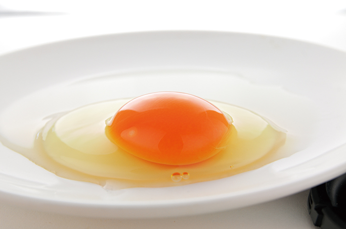
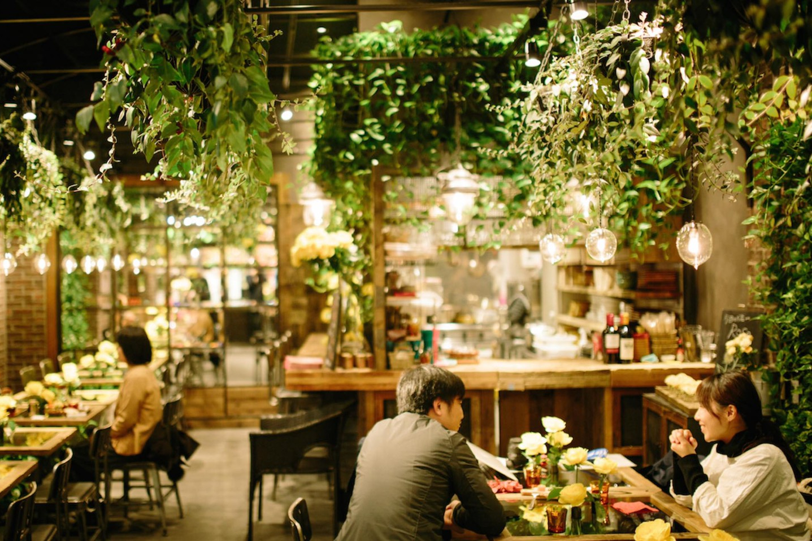
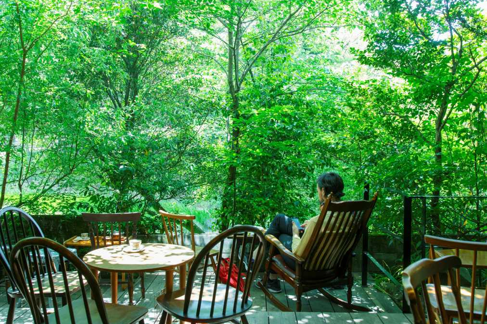

About
店舗案内
オムライスの森のご紹介
「オムライスの森」は、今年5月1日に栃木県壬生町にオープンしたオムライス専門のカフェです。
おかげさまで開店以来多くのお客様をお迎えすることができています。
地元の方が足繁く通ってくださることは、私たちにとって大きな励みになっています。
また、遠方からはるばるいらっしゃるお客様も多く、たいへん感謝しております。
お料理は、地元栃木県産のこだわり卵をつかった様々な種類のオムライスをご用意しており、栃木県で採れた材料を中心に、素材の味をそのまま引き出す様に調理しています。
また、お飲み物はエスプレッソコーヒーを中心に、地元産の果物を使ったジュースからハーブティーまで、さまざまなバリエーションのものをご用意しております。
季節の味を楽しんでただけるよう、旬の食材を使った季節限定メニューもご提供しているので、その時はトップページの「News」にてお知らせ致します。
皆様のお越しを心よりお待ちしております。
こだわり卵について

当店では、栃木県の「卵明舎」の卵「魔法卵GOLD」を使用しています。
旨味と甘み、コクがあって驚くほど膨らむ魔法の卵。磨宝卵GOLDの味は、なんといっても濃厚な後引くコクと卵黄の甘み。一般卵と比較すると生卵でなんと、3倍以上のコクがあることが分かりました。また、卵白の起泡性が高いので焼いた時のふんわりとした膨らみは格別。品の良い味とやわらかさは一流シェフにも絶賛されています。
「卵明舎」が80年以上「本当に美味しい卵」を追求して辿り着いたのが、鶏にも幸せになってもらうこと。
体に優しい素材を使った自家配合の美味しいご飯と快適な空間。卵を分けてくれる鶏が幸せになれば美味しい卵を産んでくれる。
そんな幸せのお裾分けの卵で、一人でも多くの方の暮らしをふんわり包み、美味しい笑顔で溢れさせる事ができるでしょう。
緑に包まれて癒しの時間を
緑あふれる店内
当店では、来ていただいたお客様にできるだけ安らいでもらえるように、たくさんの花や草木などの植物を装飾に使っており、みずみずしい緑に包まれまるで森林浴をしているかのような気分に浸りながらお食事やカフェタイムを楽しめます。
木々に囲まれる爽やかな空間で作りたてのお料理やコーヒーなどを楽しめば、仕事や家事に追われる日々でどこか落ち着かなかった心に余裕が生まれてくるはず。
テラス席での眺め
テラス席では栃木県壬生町の森林による絶景を一望できます。天気が良い日には、ぜひテラス席へ。
美しい緑に包まれたウッドデッキのオープンテラス。まるで避暑地の森のなかにいるような贅沢感！木漏れ日も小鳥のさえずりも心地よく、心も体も最高に開放感を感じられるでしょう。